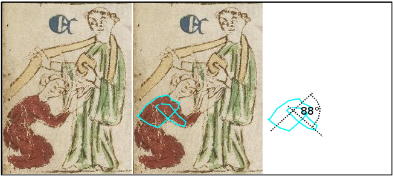

Welcome to SemToNotes
Semantic Topological Notes (SemToNotes) is a topological image annotation and image retrieval system written in JavaScript. It allows the analysis of spatio-topological relations between semantically enriched image areas.
SemToNotes is currently developed at the Institute of Humanities Computer Science at the University of Cologne as part of the DARIAH-DE Project (Phase II, March 2014 - February 2016).
Feature Overview
Cross-browser Rendering
The graphical editor of SemToNotes combines the features of a pan-zoom-rotate image viewer with those of a drawing application. All common desktop and mobile browsers (optionally Canvas, SVG or VML rendering) are supported including Internet Explorer before version 9.
Canvas Rendering
SVG Rendering
VML Rendering
Native TEI and Shared Canvas Support.
The graphical editor supports arbitrary XML standards such as the Text Encoding Initiative (TEI) or the Open Annotation Data Model (OA) as used in the Shared Canvas (SC) standard. Below a TEI facsimile example is shown.
TEI Example
Form-based XML WYSIWYM Authoring
B:
C:
A:
Native XML User Interface
SemToNotes follows the design of what is called a Native XML User Interface. With a native XML user interface, arbitrary XML documents can be loaded into and edited in the browser. XPath data binding expressions can be used to bind arbitrary XML nodes to arbitrary UI components. An XML model-view-controller automatically synchronizes all nodes and components that depend on each other. Besides the XML data model, also the development of user interfaces works in a descriptive way. User interfaces can be build up without JavaScript, with HTML5 components only.
Some HTML5 example components are shown here. A complete list of all WYSIWYM components will be available at the end of the project.
Contact
jochen.graf(at)uni-koeln.de
manfred.thaller(at)uni-koeln.de